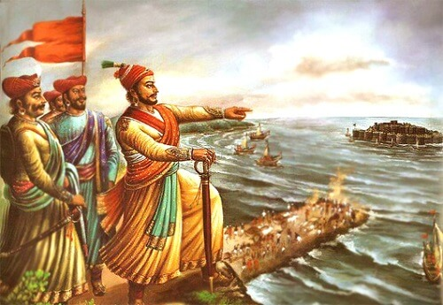

Key Contribution
Shivaji Maharaj introduced guerilla warfare tactics and built a strong navy, which were instrumental in defending his territory and engaging larger enemy forces effectively. His military strategies were groundbreaking and highly successful.

1.Guerrilla Warfare (Ganimi Kava):
Shivaji Maharaj is renowned for his use of guerrilla tactics, known as "Ganimi Kava." This approach involved small, highly mobile units conducting surprise attacks, ambushes, and hit-and-run tactics. This strategy effectively countered the larger and more traditional armies of his time, allowing him to achieve significant victories despite being often outnumbered.
2.Navy Development:
Understanding the importance of naval power for securing the western coast, Shivaji Maharaj developed a strong navy. He built a fleet of warships, established naval bases, and conducted naval warfare to protect his coastline and trade routes from external threats, particularly from the Portuguese and the Dutch.
3.Innovative Military Organization:
Shivaji Maharaj restructured his army into various units with specific roles and responsibilities. He organized his forces into divisions like the "Bakshi" (head of intelligence), "Senapati" (general), and "Havaldar" (sergeant), ensuring a well-coordinated and disciplined military structure.
4.Use of Technology and Siege Warfare:
Shivaji Maharaj utilized advanced siege techniques and technologies of the time. He employed techniques like undermining walls, using siege engines, and employing psychological warfare to demoralize enemy forces.